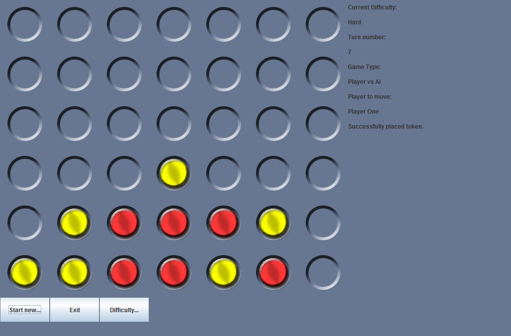
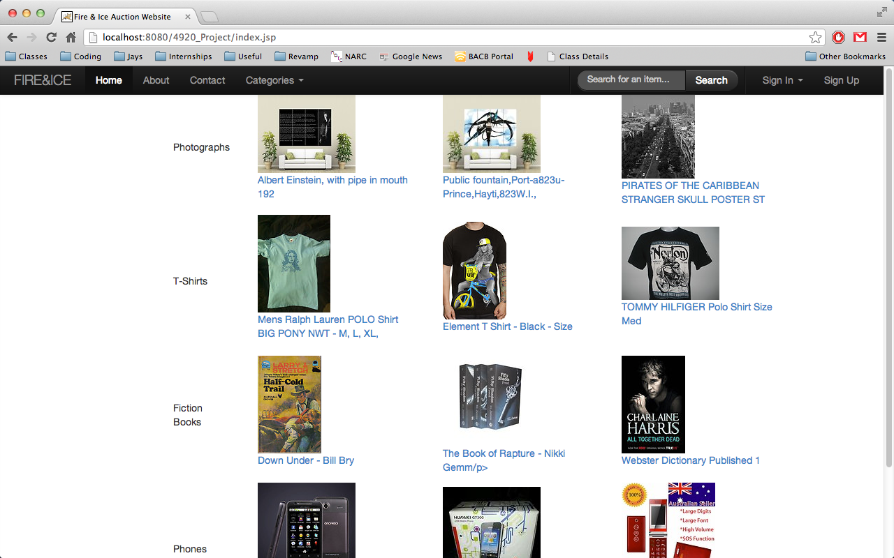
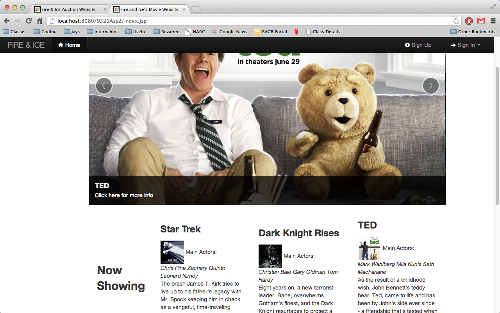
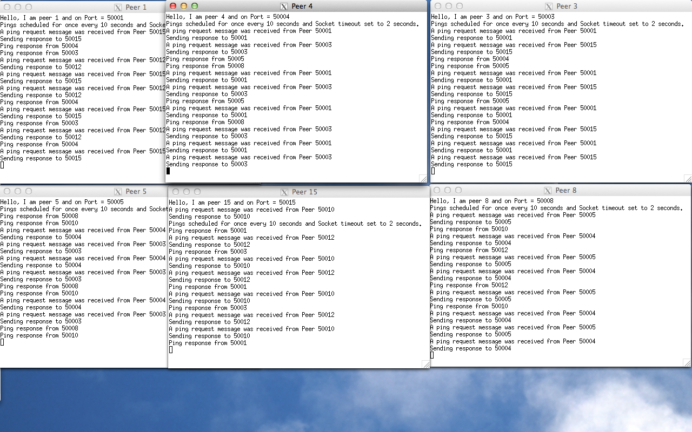
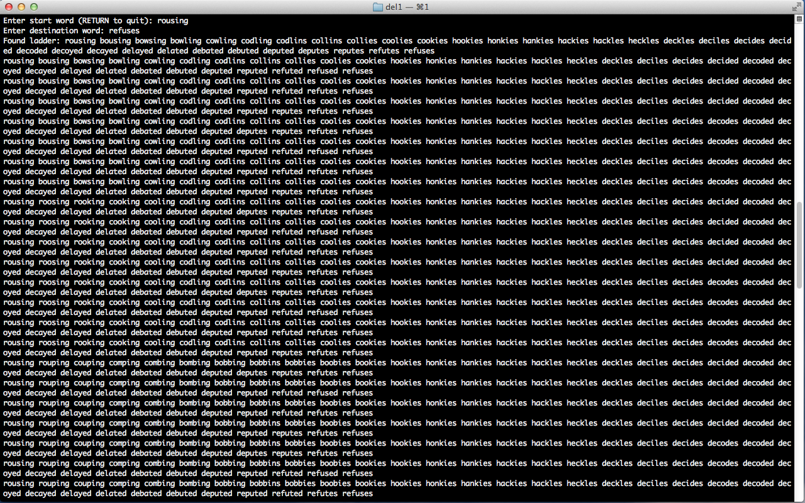

-
Connect
-
Contact me
- Tel: 0412 522 799
- Email: Click here
-
Resume
-
Home

Portfolio
Connect 4
{kind=link}
For my COMP2911 class, we had to create a Connect 4 game and create an AI to go with it. The objective of the project was come up with a simplistic design that would allow for the game to be played in a simplistic manner. An Artificial Intelligence that uses Alpha-Beta pruning was also incorporated into this design.
Python Extractor
A simple script that will extract any type of compressed format. The code is written in python. Visit the Github repository.
Vickrey-Styled Auction Website
{kind=link}
For my final-year ethics course, we were allowed to design and program anything we wanted to as long as we followed either the Waterfall method or the Agile method. My group choose Waterfall and we decided to create a website that implemented a Vickery-style auction website using a SQLite database as our backend and JSPs as our frontend.
Movie Booking Project
{kind=link}
Using Hibernate, JSPs and Twitter Bootstrap, my group mate and I created a Movie booking website where users can book movie tickets, purchase tickets and see their transaction history. Cinema owners can also add cinemas and add movie timings all through this interface. This project was part of my COMP9321 assignment 2.
Circular DHT Network
{kind=link}
Distributed Hash Tables or DHTs are a common Peer-to-Peer method of transferring information across the internet. BitTorrent for example is a popular technology that uses DHTs extensively. A Circular DHT is one that loops its self around so that each node is only requesting from one or two nodes. This project uses Java to create a Circular DHT to send packets across networks.
Word Ladder in C++
{kind=link}
Using some simple C++ generics and STLs, I was able to create a "Word Ladder" program that found the connection between two words by altering only one letter in the orignal word. The word "cat" for example can become "dog" by the following word ladder: cat cot dot dog. This program tries to find the most efficient route in a word ladder and prints it.
UDP Protocol
One of the assignments in COMP3331 was to create our own UDP protocol to send text files across networks. This program does not send the actual file, but instead reads the text file and creates another text file on the receiver's end and copies the content into it. Packet loss is also simulated and dealt with in this program.